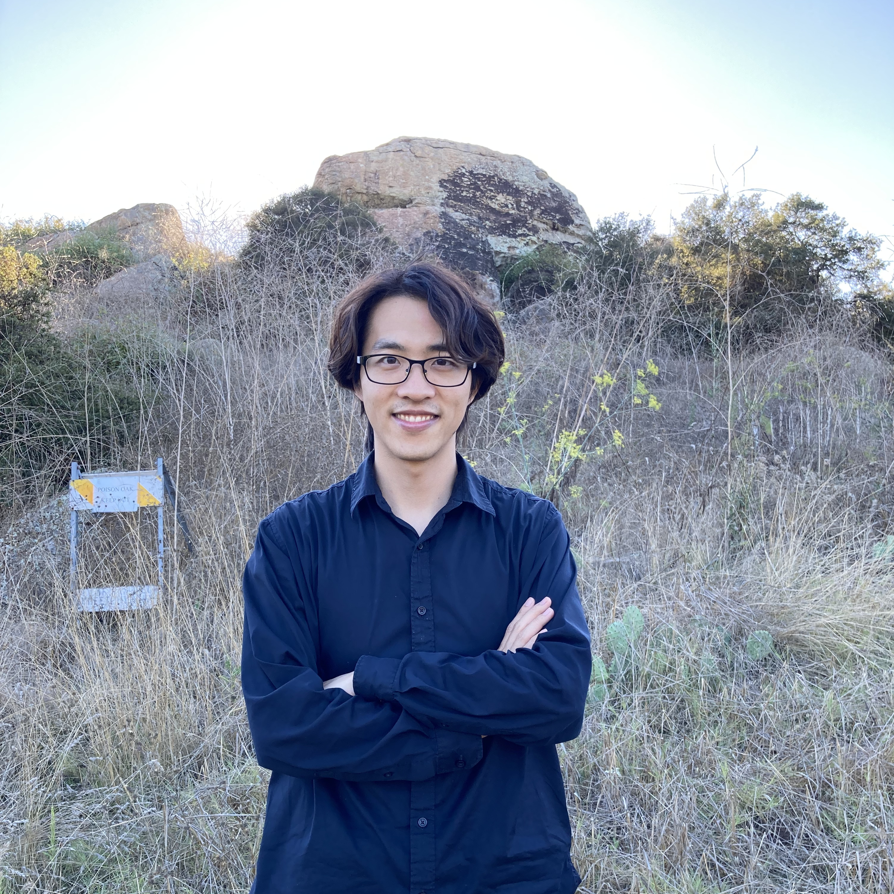
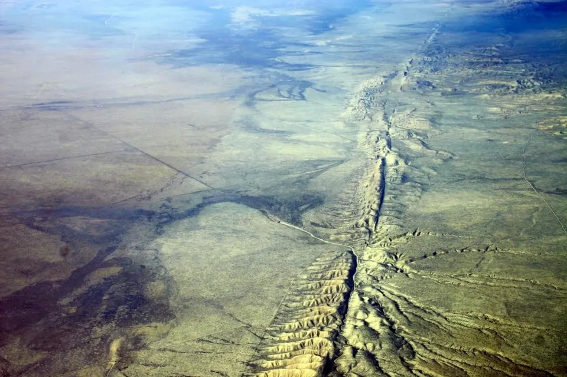
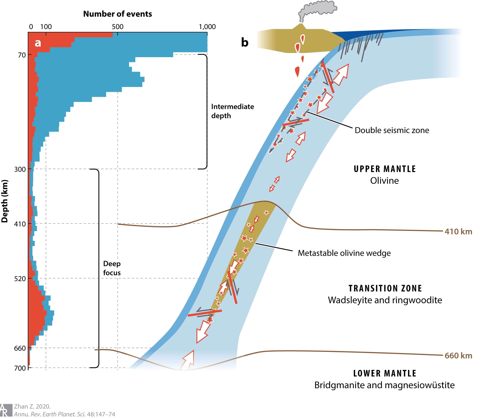
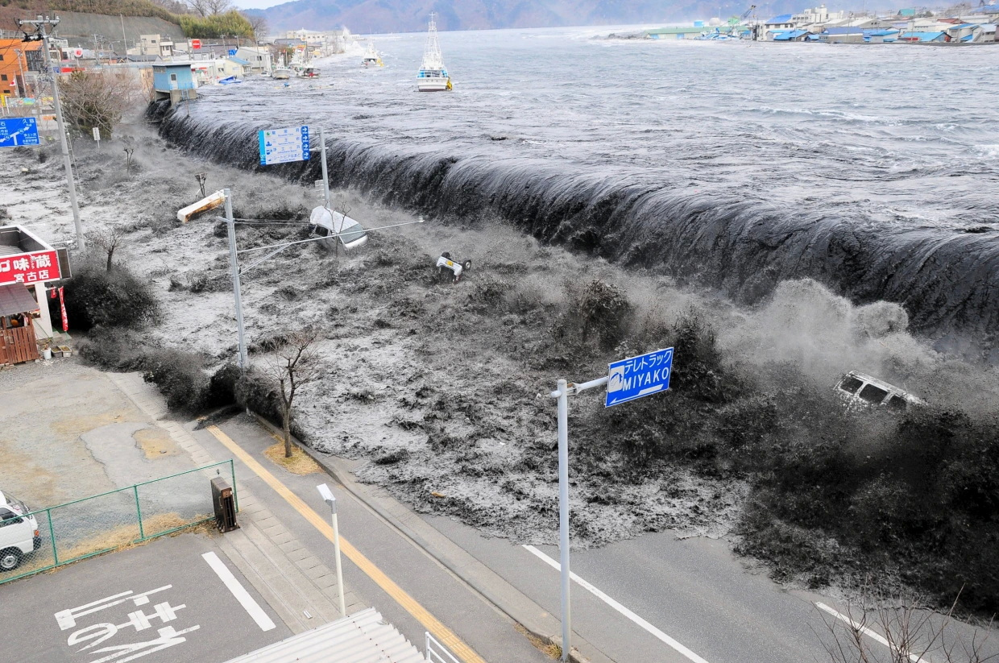
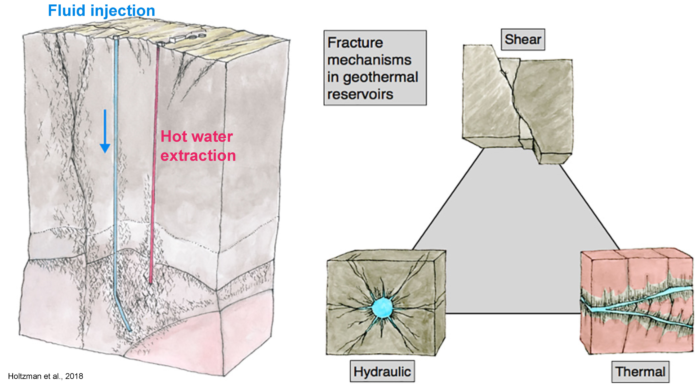

Zhe Jia
Welcome! I research the life of earthquakes, the relevant dynamics in the Earth, and their impacts on natural hazards and sustainable resilience.
Email / Google Scholar / Orcid / ResearchGate
About
I am a research assistant professor at the UT Institute for Geophysics at the University of Texas at Austin. I use multi-geophysical data and modeling to understand earthquake mechanisms and their related hazards. My research spans earthquakes from shallow to deep, from continental faults to subduction zone environments. I've discovered that many large earthquakes occur as a series of ruptures across multiple faults in distinct episodes, challenging the previous assumption of a smooth unzipping of a planar fault.
Currently, I focus on understanding earthquake behaviors and their controlling factors, such as fault geometry, stress interactions, structural heterogeneities, regional tectonics, and fluids. I use an integrated research framework that covers 1) inversions of earthquake source processes using seismic and geodetic data, 2) numerical/dynamic models that interpret earthquake behaviors, and 3) quantitative assessment of seismic hazards using state-of-the-art earthquake source and Earth’s structural models. I also adopt new technologies including machine learning and distributed acoustic sensing. See more in the research section.
I am actively looking for motivated students, postdocs, and visiting scholars, and there are co-advising opportunities! Please refer to this PhD recruitment flyer for more details. Please feel free to contact me to discuss research and applications.
Professional Appointments
Institute for Geophysics, UT Austin | Research Assistant Professor | 2024-
Scripps Institution of Oceanography, UCSD | Green Postdoctoral Scholar | 2022-2024
Education
California Institute of Technology | PhD | 2016-2022
University of Science and Technology of China | MS | 2013-2016
University of Science and Technology of China-SCGY | BS | 2009-2013
Recent News
Interests

Understanding earthquake source processes is critically important for saving lives and avoiding economic losses. Questions include: How does an earthquake initiate and develop? What make the final size of earthquakes large or small? What make the pattern of earthquakes simple or complex?

Dynamics inside the Earth define the movement of Earth's tectonic plates, which accounts for the most powerful seismic events on the planet. Questions include: How do the interactions of faults modulate the dynamics of earthquakes? How to constrain the shape and stress state of the inaccessibly deep subduction slab? How do we learn about the dynamical evolution over the long history of the subduction slabs relying only on present-day observations?

Assessing and alerting natural hazards, such as earthquakes and tsunamis, are vital yet difficult due to the unpredictable nature, short reaction time, and diverse impact levels and site conditions. Questions include: Can we combine multi-geophysical observations and modelings for rapid and accurate responses to earthquakes and tsunamis? Can we accurately assess the different levels of seismic hazard for different regions?

Geothermal energy is a promising type of renewable energy. How to utilize the understanding of fluid-fault interactions to guide the enhanced geothermal system production? How to minimize the negative consequence of induced earthquakes during the geothermal exploration and carbon sequestration with the understanding of rupture processes? How to incorporate the seismic and geodetic observations to find the easily-accessible and safe geothermal resources?